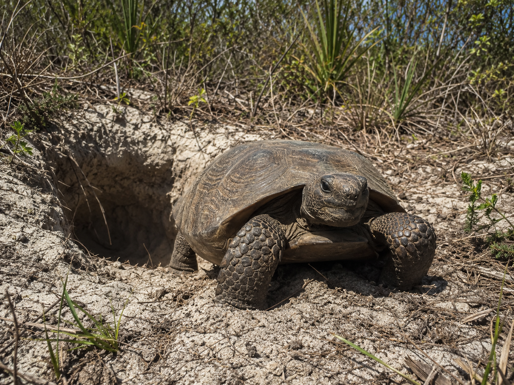
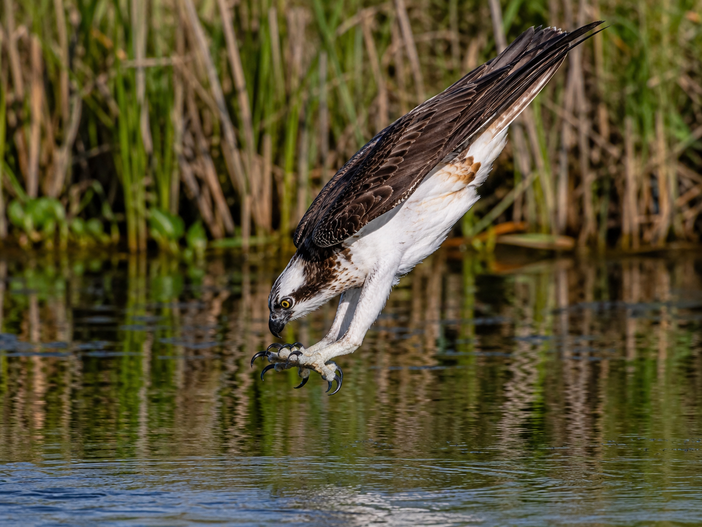
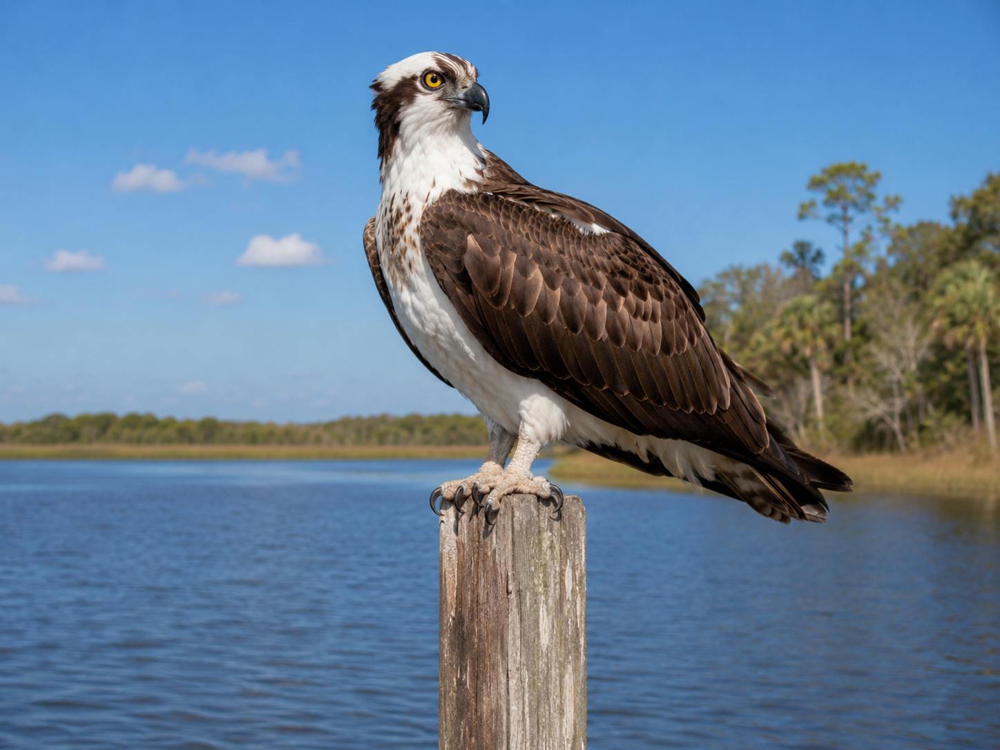
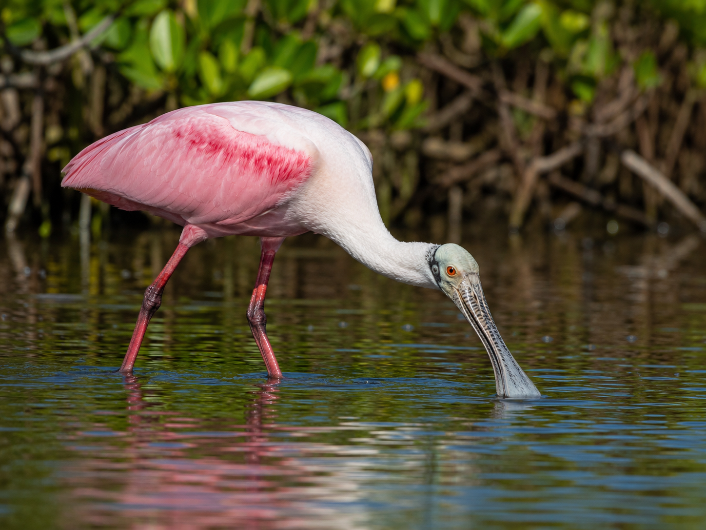
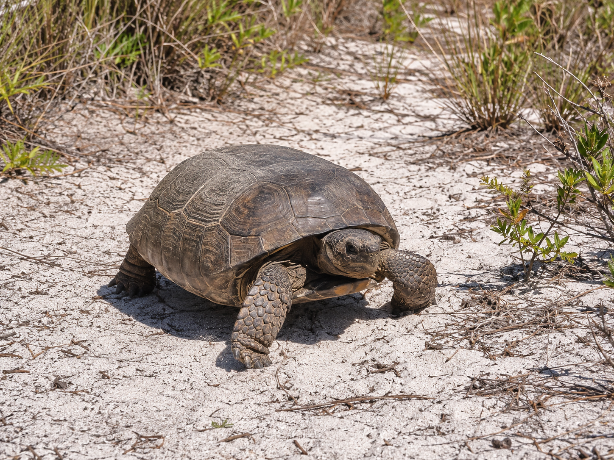
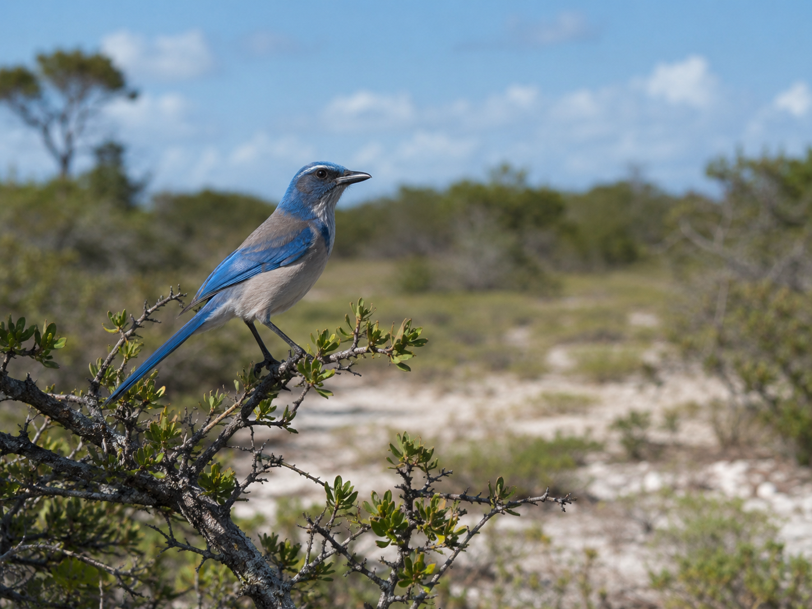

Hold this question as you work. By the end, you’ll be able to answer it with evidence from your investigation.
Start here. Learn the words you will use today.
In Lesson 30.01, you learned that Florida animals have adaptations — traits that help them survive. But here’s something to think about: animals of the same kind aren’t all identical. Every gopher tortoise in a Florida scrub is a little different from every other gopher tortoise. Some have slightly broader front claws. Does that matter?
You already know what an adaptation is. Today’s question is different: what happens when two animals of the same kind have slightly different versions of the same trait?
You already know adaptation, habitat, camouflage, predator, prey, and trait from Lesson 30.01. These six words are brand new — they’ll help you talk about what happens when individuals of the same species differ from each other. Tap each card to flip it.
Copy this sentence carefully into your science notebook:
“When a variation in a characteristic gives one individual a better chance of surviving, that is called a survival advantage.”
Now learn the main science idea.
In Lesson 30.01, you discovered that Florida animals have adaptationsAdaptationA trait that helps a living thing survive in its environment — learned in Lesson 30.01. that match their habitats. But look closely at a group of the same animal and you’ll notice something: the individuals aren’t identical. One alligator is slightly darker. One gopher tortoise has broader front claws than others nearby. These small differences between individuals are called variationsVariationA difference in a characteristic between individuals of the same species..
Variations exist in every populationPopulationA group of animals of the same kind living in the same area.. No two individualsIndividualOne single organism within a population. are exactly alike — not even in the same family.
Most variations don’t matter much. Two tortoises with shells of slightly different brown shades — that probably doesn’t change who survives. But a gopher tortoise with noticeably broader front claws can dig a faster, deeper burrow. In Florida’s scrub, where wildfires sweep through every few years, that deeper burrow might be the difference between surviving the fire and not.
When a variation helps one individualIndividualOne single organism within a population. survive better, it’s called a survival advantageSurvival AdvantageWhen a variation makes one individual more likely to survive and reproduce.. That individual is more likely to live long enough to have young — and those young can inherit the same helpful characteristicCharacteristicA feature of a living thing — same meaning as trait..
Over time: if the variation keeps helping, more and more individuals in the population have it. That’s how small differences, generation by generation, shape an entire species.

Variations exist in every population. Most don’t change survival odds. But some give one individual a clear edge — a survival advantage. That individual is more likely to reproduce, and the helpful variation may be passed to the next generation.
Curious? Go Deeper
Scientists call the process where helpful variations become more common over time natural selection. After each wildfire, only the tortoises with deep enough burrows survive. Those survivors reproduce. Their young tend to inherit broader claws. The next generation, on average, digs slightly better than the one before it.
Do this across thousands of generations and the whole population shifts — broader claws become the norm. This is why so many Florida animals seem so perfectly shaped for their habitats: they were shaped, one small variation at a time, over enormous stretches of time.
Now test the idea yourself.
This investigation has two parts. First you’ll meet four Florida animals not covered in Lesson 30.01. Then you’ll examine individuals of the same species and determine when a variation becomes a survival advantage.
Read the four organism cards below. These animals are all different from the ones in Lesson 30.01. Note each animal’s habitat, key adaptation, and how that adaptation helps it survive.
Copy the comparison chart into your science notebook and fill in all four rows using the organism cards.
Work through the Variation Pairs below the chart. For each pair, read the scenario and decide which individual has a survival advantage — and why.
Choose one variation pair and write 2–3 sentences explaining how the variation creates a survival advantage. Use at least two vocabulary words from this lesson.

🗂 Organism Cards

Lakes, rivers, and coastal waters throughout Florida.
Reversible outer toe with spine-covered foot pads.
The osprey dives feet-first from up to 100 feet up. Its outer toe rotates backward — two toes front, two behind — gripping the fish like tongs. Tiny spines on its foot pads prevent a slippery fish from escaping.

Shallow salt marshes and coastal estuaries in south Florida.
Long, flat, spoon-shaped bill.
The bird sweeps its bill back and forth below the water's surface, feeling for shrimp and small fish — even in water too murky to see through. No sight needed; the bill detects movement by touch.

Dry, sandy scrub and pine flatwoods — habitats that burn regularly.
Broad, flat front legs built for digging.
The tortoise digs burrows up to 40 feet long. When wildfires, droughts, or extreme heat strike, it retreats underground where temperatures stay stable and safe.

Florida scrub — dry, sandy land with low oak trees. Found nowhere else on Earth.
Cooperative family sentinel behavior.
Family members take turns on high branches as lookouts. When a predator is spotted, the sentinel calls a warning — the whole family freezes or flees. This shared behavior, not a body part, is the adaptation.
| Animal | Animal Group | Key Adaptation | Habitat | How It Helps Survive |
|---|---|---|---|---|
| 🦅 Osprey | ||||
| 🦩 Roseate Spoonbill | ||||
| 🐢 Gopher Tortoise | ||||
| 🐦 Florida Scrub-Jay |
🔀 Variation Pairs — Which Individual Has the Advantage?
For each pair, read the scenario. In your notebook: which individual survives better, and why?
Can sweep slightly deeper below the water surface to find food.
Reaches the same depth as most spoonbills in this marsh.
In your notebook: Which spoonbill can still find food? Which individual has a survival advantage in this drought — and why does the variation in bill length matter here specifically?
Digs approximately 4 feet deep per hour.
Digs approximately 2 feet deep per hour.
In your notebook: Which tortoise survives the fire? What specific variation makes the difference — and what would most likely happen to Tortoise B?
Think through each prompt. Use specific details from your investigation. You'll write your strongest response in the Assignment tab.
Tell the story of your investigation: which animals you studied, what variations you found, and the one thing that surprised you about how a small difference can affect survival.
Talk these over in your mind — or with a family member — before moving on.
Check what you understand.
Show what you learned.
🔍 Part A — Identify
Use your comparison chart and variation pair analysis to answer each one.
🚀 Part B — Short Answer
Answer in complete sentences. Use vocabulary words from this lesson.
Choose one variation pair from today’s investigation. Does the variation give one individual a survival advantage? Use evidence from your analysis to support your answer.
What do you think?
💡 Start with: “I think the variation in [characteristic] gives Individual A a survival advantage because…”
What did you observe or learn that supports your thinking?
💡 Start with: “I know this because when I analyzed the variation pair, I noticed…”
Why does that make sense?
💡 Start with: “This makes sense because in this habitat, an individual without this variation would…”
📚 Try to use at least two of these words: variation, survival advantage, population, individual, characteristic
🎨 Part C — Draw & Label
Draw two individuals of the same Florida animal side by side. Show one variation between them — in a body part or a behavior. Label the variation on each individual and write one sentence explaining which has the survival advantage and why.
Submit your work on Canvas using one of these options:
Make sure your submission includes all of these: